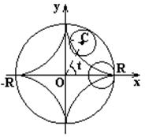

6.6.3*. Астроида

Астроидой называется кривая, которую описывает точка
окружности радиуса , когда окружность катится
без скольжения внутри окружности радиуса  .
.
.Параметрические уравнения астроиды
Параметрическое
уравнение астроиды
В
декартовых координатах уравнение астроиды
Уравнение астроиды
в декартовой системе координатах
.
Длина астроиды
Площадь,
ограниченная астроидой
Длина астроиды
,
а площадь, ограниченная астроидой, .